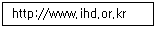
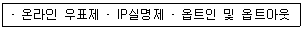

인터넷정보관리사-2급 (2011-06-11 기출문제)
1과목: 인터넷의 이해
1. 인터넷 상에서 여러 사람이 실시간 대화를 나눌 수 있는 서비스는?
- 유즈넷
- FTP
- WWW
- IRC
(정답률: 45%)

2. 국가 5대 기간전산망에 포함되지 않는 것은?
- 금융전산망(FNIS)
- 국방전산망(DNIS)
- 공안전산망(SNIS)
- 의료보건전산망(MENIS)
(정답률: 72%)
3. 인터넷상에서 주민등록번호의 유출과 오남용 방지를 목적으로 만든 제도로서, 주민등록번호를 대신하여 본인임을 확인받을 수 있는 사이버 신원 확인번호 서비스를 무엇이라 하는가?
- I-PIN
- 고퍼
- 유즈넷
- RFC
(정답률: 92%)
4. 다음 중 인터넷 표준안을 제정하기 위한 기술 위원회는?
- ISOC
- IETE
- IANA
- IRTF
(정답률: 44%)
5. 다음 중 도메인 이름과 IP주소를 매핑하여 도메인 이름을 IP주소로 바꾸어 주는 역할을 하는 서버는?
- 프록시 서버
- 네이밍 시스템
- DNS(Domain Name System)
- 컨버터 시스템(Converter System)
(정답률: 72%)
6. 다음 인터넷 도메인 설명 중 옳지 않은 것은?

- WWW : 호스트 컴퓨터 이름
- ihd : 소속 기관
- or : 소속 기관의 서버 이름
- kr : 소속 국가
(정답률: 47%)
7. 일반최상위 도메인(gTLD)에 해당하지 않는 것은?
- biz
- museum
- mil
- kr
(정답률: 62%)
8. 한국인터넷진흥원에서 운영하는 Whois 검색 서비스에서 제공하지 않는 정보는 무엇인가?
- 특정 도메인 이름
- 책임자 전화번호
- 등록인 전자우편
- 책임자 직업
(정답률: 70%)
9. IPv6 대한 특징으로 틀린 것은?
- 8비트씩 4개 부분으로 나누어 각 부분을 콜론(:)으로 구분한다.
- 실시간 멀티미디어 데이터를 처리를 할 수 있는 광대역폭을 확보한다.
- Flow Label 영역을 통한 Qos제어기능을 지원한다.
- IP-SEC를 탑재하여 인증 기능과 보안기능을 동시에 제공한다.
(정답률: 42%)
10. 받은 메일을 다시 타인에게 원문 그대로 전송하는 것을 나타내는 전자우편 용어는?
- Attachment
- Forward
- Flame
- Spam
(정답률: 50%)
11. 인터넷상에서 공통의 관심사를 가진 사람들끼리 정보의 교류나 논의를 목적으로 모인 동호회 또는 포럼으로, 전자우편을 이용하여 의견을 주고 받기 위한 서비스는?
- 메일링 리스트
- FTP
- 아키
- 고퍼
(정답률: 48%)
12. 접속이 많아 시스템이 부하가 발생할 경우를 대비하여 동일한 자료를 여러 사이트의 서버에서 제공함으로써 원할한 서비스를 제공하는 것은?
- 부메랑사이트
- 멀티사이트
- 포털사이트
- 미러사이트
(정답률: 60%)
13. FTP관련 명령어 중 현재 디렉토리의 위치를 표시하기 위한 것은?
- pwd
- ls
- dir
- get
(정답률: 36%)
14. 네트워크상에서 특정한 주제나 관심사에 대하여 네티즌들이 자유롭게 자신의 의견을 게시하거나, 자료를 등록하여 정보를 교류할 수 있는 서비스는?
- FTP
- 유즈넷
- WWW
- 텔넷
(정답률: 59%)
15. 뉴스 그룹의 FAQ 및 주요 기사 모음이 주기 적으로 올라가는 FAQ 전용 뉴스 그룹은 어떤 것인가?
- han.announce
- han.answers
- han.test
- han.news.group
(정답률: 29%)
16. 다음중 메신저의 특징이 아닌 것은?
- 실시간 응답성
- 익명성
- 시간과 공간의 무제한성
- 오프라인
(정답률: 88%)
17. 사이버 공간에서 컴퓨터 자판의 문자, 기호, 숫자 등을 이용하여 자신의 감정이나 얼굴 표정을 간단히 표현하는 것을 무엇이라 하는가?
- 아바타
- 이모티콘
- 두어문자
- 페인
(정답률: 78%)
18. 가정이나 소규모 사무실에서 인터넷과 같은 통신 네트워크를 이용해 최소한의 인력과 비용으로 소득을 올리는 사업형태를 뜻하는 용어는?
- ERP
- EDI
- CRM
- SOHO
(정답률: 29%)
19. 온라인 상거래에서 물품 구매시 선입금 후, 물품의 하자 및 판매자의 물품 미발송시 발생되는 소비자 피해를 방지하기 위한 제도는?
- SSE
- 공인인증서
- 에스크로제도
- 스마트 카드
(정답률: 72%)
20. 통신망을 통해 전파되는 불건전 정보의 유통을 억제하고, 건전한 정보문화 확산을 위해 설립한 법정기구는?
- 저작권 심의 조정 위원회
- 언론 중재 위원회
- 인터넷 선거보호 심의위원회
- 방송통신심의위원회
(정답률: 75%)
21. 다음 중 보호받지 못하는 저작물인 것은?
- 소설
- 음악저작물
- 법률
- 영상저작물
(정답률: 66%)
22. 다음중 저작 인격권이 아닌 것은?
- 공표권
- 성명표시권
- 동일성유지권
- 배포권
(정답률: 44%)
23. 전자서명법의 인증기관이 아닌 것은?
- 한국정보인증
- 한국전자인증
- 금융결제원
- 한국통신
(정답률: 54%)
24. IRC 사용시의 네티켓으로 올바르지 않은 것은?
- 만나고 헤어질 때는 간단히 인사를 나눈다.
- 외계어를 사용해서 빨리 친해진다.
- 사생활을 침해할 수 있는 질문은 가급적 삼가한다.
- 대화방의 성격에 맞는 내용을 이야기 한다.
(정답률: 74%)
25. 다음과 같은 기술이나 개념이 출현한 동기와 가장 관련이 깊은 것은?

- 인터넷 예절
- 스팸메일
- 안전한 전자상거래
- 신속한 배송 시스템
(정답률: 39%)
26. 인터넷 이용자의 실명과 주민등록번호가 확인 되오야만 인터넷 게시판에 글을 올릴 수 있는 제도는?
- 사전 신청제
- 인터넷 실명제
- 정보 검열제
- 인증 등급제
(정답률: 75%)
27. 유해정보차단 소프트웨어가 아닌 것은?
- 그린 i-net
- 수호천사 i+
- 오아시스
- 스파이웨어
(정답률: 74%)
28. 컴퓨터 운영체제의 성능 평가기준으로 올바르지 않은 것은?
- 처리능력(Throughput) 향상
- 반환 시간(Turnaround) 증가
- 신뢰도(Reliability) 향상
- 사용 가능도(Availability) 증대
(정답률: 48%)
29. 바이러스 백신 유틸리티로만 짝지어진 것은?
- V3, 바이로봇
- 바이러스 체이서, 알집
- 노턴 안티 바이러스, 알씨
- V3, 파일구리
(정답률: 57%)
30. 데이터를 체계적으로 배열 또는 구성한 편집물로서 개별적으로 그 소재에 접근하거나 그 소재를 검색할 때 가장 적합한 응용 프로그램은?
- 워드프로세서
- 데이터베이스
- 스프레드시트
- 통신패키지
(정답률: 43%)
31. 가장 기본적인 데이터 통신장비로서 변조기와 복조기를 결합한 변복조 장치로 디지털 신호와 아날로그 신호의 연결을 위해 필요한 장치는?
- 코덱
- DSU
- 모뎀
- CSU
(정답률: 54%)
32. 패킷에 담긴 주소정보를 확인하여 적절한 통신 경로를 선택하고 다른 통신망으로 전송하는 장치는?
- 리피터
- 브리지
- 라우터
- 게이트웨이
(정답률: 54%)
33. 케이블 TV망에 대한 설명으로 틀린 것은?
- 동축 케이블을 사용한다.
- 별도의 모뎀은 전혀 필요 없다.
- IP주소를 유동적으로 할당한다.
- 전화선과 별도로 사용할 수 있다.
(정답률: 50%)
2과목: 인터넷 자원 탐색
34. 다음 중 광대역 통신망 ATM 셀(Cell)의 구성으로 옳은 것은?
- 5바이트의 헤더와 48바이트의 정보 블록
- 4바이트의 헤더와 53바이트의 정보 블록
- 5바이트의 헤더와 53바이트의 정보 블록
- 4바이트의 헤더와 48바이트의 정보 블록
(정답률: 40%)
35. 인터넷 통신을 위한 기술로서 양쪽 방향의 전송 속도가 서로 다른 특징을 가지며, 데이터 통신과 일반 전화를 동시에 이용할 수 있는 통신 기술은?
- ADSL
- ISDN
- CATV
- Frame Relay
(정답률: 39%)
36. 하이퍼텍스트의 확장된 개념으로 정보의 저장과 관리를 위해 텍스트, 그래픽, 음성, 영상 등이 결합되어 있는 정보를 말하는 것은?
- Hyperlink
- Hypermedia
- CGI
- Helper
(정답률: 32%)
37. 웹의 개념에 대한 내용으로 옳지 않은 것은?
- WWW은 World Wide Web을 의미한다.
- 웹에서 사용되는 기본 프로토콜은 CGI이다.
- 웹 브라우저는 URL에 의해 서버에 존재하는 문서를 가져온다.
- 클라이언트/서버 구조로 이루어진 분산 하이퍼텍스트 시스템을 뜻한다.
(정답률: 47%)
38. 다음 중 웹서버 와 웹 브라우저 사이에서 데이터를 중계해 주는 역할을 하는 서버의 용어는?
- 프록시 서버
- 뉴스 서버
- 메일 서버
- FTP서버
(정답률: 54%)
39. 다음 네트워크 장비 중 OSI 7계층의 물리계층에 해당하는 것은?
- 게이트웨이
- 브리지
- 라우터
- 리피터
(정답률: 28%)
40. 홈페이지 그래픽 기반의 저작도구가 아닌 것은?
- 프론트 페이지
- 드림위버
- 플래시
- 아크로뱃리더
(정답률: 45%)
41. HTML 태그의 특징으로 옳지 않은 것은?
- 대소문자 구분이 없다.
- 대부분 <>........</ > 한 쌍으로 이루어진다.
- 큰따옴표(“ ”)는 한 단어 일 때 사용하지 않아도 된다.
- 특수기호를 사용하여 나타낼 수 없다.
(정답률: 50%)
42. 다음 중 문자 속성 태그의 기능이 틀린 것은?
- <TT>문자</TT> - 문자를 타자를 친 것처럼 표현
- <U>문자</U> - 문자를 밑줄 문자로 표현
- <SMALL>문자</SMALL> - 문자를 주변 문자보다 작게 표현
- <SUP>문자</SUP> - 문자를 아래 문자 첨자로 표현
(정답률: 27%)
43. ‘META’ 태그의 종류 및 기능에 대한 설명으로 틀린 것은?
- <META name =“author” content=“Hong-gildong”> : 문서를 제작한 사람
- <META name =“generator” content=“Notepad5”> : 문서 저작 도구
- <META name =“ robots” content=“noindex”> : 문서의 요약 정보
- <META http-equiv =“Refresh” content=“5”; URL=“pmg.htm”> : 5후에 pmp.htm 문서로 자동 이동
(정답률: 69%)
44. 소프트웨어 모듈을 객체로 만들어 이후에 재사용 함으로써 소프트웨어의 생산성을 향상시키는 프로그래밍 기법은 무엇인가?
- 인터프리터 프로그래밍
- 컴파일러 프로그래밍
- 어셈블리 프로그래밍
- 객체 지향 프로그래밍
(정답률: 18%)
45. 다음 중 멀티미디어 소프트웨어가 아닌 것은?
- 디렉터
- 델파이
- 툴북
- 칵테일
(정답률: 10%)
46. 웹 브라우저에서 볼 수 있는 이미지 파일이 아닌 것은?
- gif
- jpg
- png
- asf
(정답률: 47%)
47. 다음 중 인터넷 방송 서비스의 형태로 틀린 것은?
- VOD(Video on Demand) - 주문형 비디오
- AOD(Ad on Demand) - 주문형 교육
- LOD(Lecture on Demand) - 주문형 강의
- MOD(Music on Demand) - 주문형 음악
(정답률: 36%)
48. 멀티미디어 그래픽 기법 중 물체의 모형에 명암과 색상 등 변화를 주어 입체감이 들게 함으로써 사실감을 더하는 방법으로 3차원 에니메이션을 만드는 기법은?
- 랜더링
- 모핑
- 리터칭
- 디더링
(정답률: 36%)
49. 웹브라우저의 기능을 강화시키기 위한 프로그램으로, 브라우저에서 자체적으로 실행하지 못하는 각종 형식의 파일을 일체로 동작할 수 있게 해주는 프로그램을 뜻하는 것은?
- 통신 프로그램
- 그래픽 프로그램
- 문서 편집기
- 플러그인 프로그램
(정답률: 70%)
50. 웹 브라우저의 기능을 추가하는 프로그램 종류와 확장자가 잘못 연결된 것은?
- Widows Media Player : ASF
- ShockWave Flash : SWF
- Windos Media Player : RA
- QuickTime : MOV
(정답률: 48%)
51. 재생중인 동영상 중 캡쳐하고 싶은 화면을 이미지 파일로 저장할 수 있으며, 연속저장 기능을 이용할 경우 원하는 동영상의 장면을 프레임단위의 연속적인 화면으로 캡처 할 수 있는 플러그인 프로그램은?
- Acrobat reader
- Winamp
- Shockwave Flash
- Gom Player
(정답률: 24%)
52. 다음 중 Real Player에서 지원하지 않은 파일 형식은?
- gif
- cpp
- swf
(정답률: 24%)
53. 웹 브라우저에서 제공하는 서비스가 아닌 것은?
- E-Mail 전달
- FTP 서버 연결
- 악성코드 검사
- 웹 사이트 검색
(정답률: 67%)
54. 웹 브라우저의 역할로 적합하지 않은 것은?
- 하이퍼텍스트와 하이퍼미디어 정보를 사용자에게 보여주는 역할
- 웹 브라우저의 주소 표시줄에 URL 형식을 입력하면 서버의 문서를 보여주는 역할
- 같은 홈페이지를 자주 방문하면 Open 속도가 느려지는 역할
- 동시에 여러 개의 브라우저에서 데이터 검색 및 다운로드가 가능
(정답률: 55%)
55. 텍스트 기반의 웹 브라우저에 해당되는 것은?
- 삼바(Samba)
- 모자익(Mosaic)
- 핫자바(HotJava)
- 오페라(Opera)
(정답률: 34%)
56. 1993년 미국의 코넬 대학 법률정보연구소의 토마스 브루스에 의해 개발된 웹 브라우저는 무엇인가?
- 모자익(Mosic)
- 첼로(Cello)
- 모질자(파이어폭스)
- 오페라(Opera)
(정답률: 38%)
57. 인터넷 익스플로러의 기능으로 설명이 적합하지 않은 것은?
- 목록 보기 기능 : 최근에 열어본 페이지 목록을 주소 표시줄 아래쪽으로 표시하는 기능
- 즐겨찾기 기능 : 자주 방문하는 URL을 저장하여 바르게 접속할 수 있도록 하는 기능
- 자동 완성 기는 : 최근 접속한 사이트의 URL을 저장해 두는 기능
- 웹 페이지 저장 기능 : 웹 페이지의 텍스트와 이미지, 프레임 구조를 하나의 파일로 저장할 수 있는 기능
(정답률: 47%)
58. 브라우저가 지원하는 모든 기능과 세부 항목이 나타나는 인터넷 익스플로러의 화면 구성은?
- 제목 표시줄
- 메뉴 표시줄
- 도구 모음
- 본문 영역
(정답률: 16%)
59. 인터넷 익스플로러 7.0의 화면에서 보기 메뉴에 해당되는 것은?
- 페이지 설정
- 인쇄 미리보기
- 상태표시줄
- 보내기
(정답률: 28%)
60. 인터넷 익스플로러 7.0의 인터넷 옵션의 [일반] 탭의 홈페이지 내용으로 적합하지 않은 것은?
- 현재 페이지 : 현재 인터넷 익스플로러가 접속한 페이지를 홈 페이지로 변경
- 기본값 사용 : 기본 접속 페이지로 변경
- 빈 페이지 : 홈 페이지를 빈 페이지로 비워 놓음
- 접속 페이지 : 이미 한번이상 접속한 페이지를 선정
(정답률: 43%)
61. 인터넷 익스 플로러 7.0의 인터넷 옵션의 [일반] 탭의 스타일에 해당되지 않은 것은?
- 색
- 글꼴
- 형태
- 사용자 서식
(정답률: 24%)
62. 인터넷 익스플로러 7.0의 웹 페이지에 있는 이미지만을 저장하는 가장 간단한 방법은?
- 열려 있는 웹 페이지의 HTML 파일을 저장하는 메뉴를 선택
- 그래픽 편집 프로그램을 이용하여 현 페이지를 갈무리
- 마우스의 오른쪽 버튼을 눌러서 다른 이름으로 그림 저장을 선택
- 이미지가 있는 URL을 즐겨찾기에 저장
(정답률: 42%)
63. 검색엔진의 색인기에 대한 설명으로 옳은 것은?
- 카탈로그라고 불려지기도 하며 로봇이 정리한 웹 페이지의 내용을 저장
- 인터넷 상에 있는 웹 사이트나 뉴스 그룹을 주기적으로 검색
- 자신이 방문한 웹 사이트의 모든 내용을 사이트에 링크되어 있는 모든 웹 페이지들을 차례로 방문하여 HTML 태그를 체크한 후, 단어들을 추적
- 일정한 기간을 주기로 자신이 방문했던 사이트들을 다시 방문함으로써 해당 페이지의 갱신 여부를 체크한 후 방문하여 수집한 정보를 넘긴다.
(정답률: 37%)
64. 로봇이 웹에 미치는 영향에 대한 설명으로 적합하지 않은 것은?
- 작은 내용 검색을 통해 네트워크상의 트래픽을 발생시킬 수 있으며, 이로 인하여 속도가 느려지기도 한다.
- 웹 서버가 아닌 PC나 MAC을 서버로 사용하는 사이트로 로봇으로 인해 시스템이 다운되기도 한다.
- 로봇으로 인해 CGI 프로그램 소스가 파손될 수 있다.
- 검색 옵션이 다양하고 사용자에게 편리한 인터페이스를 제공한다.
(정답률: 30%)
65. 로봇 배제 표준에서 robots.txt 파일을 이용하는 방법이 아닌 것은?
- 특정 로봇의 배제
- 모든 문서에 접근 배제
- 메타 태그를 이용한 배제
- 특정 디렉토리(경로)의 배제
(정답률: 0%)
66. 검색엔진에서 키워드로 입력된 주제와 관련하여 데이터베이스가 보유하고 있는 적합한 정보 중에서 현재까지 검색된 결과의 수가 전체 적합 정보 50개 중 40개 검색되었다면 재현율은?
- 80%
- 50%
- 40%
- 10%
(정답률: 43%)
3과목: 인터넷 윤리
67. 검색결과의 평가 우선순위에서 키워드의 위치에 대한 설명으로 적합하지 않은 것은?
- 웹 페이지의 제목 줄에 키워드가 포함되어 있으며, 우선순위로 적용
- 첫 단어나 구문이 키워드로 시작하는 경우 가장 확실하게 적용
- 웹 페이지에서 문단이 시작되는 첫 부분에 키워드를 위치시키면 높은 우선순위를 부여
- 한 페이지 내에서 키워드가 다른 단어와 비교하여 얼마나 자주 나타나는가에 대한 빈도를 분석
(정답률: 25%)
68. 이용자들이 홈 페이지의 등록을 신청한 웹 사이트를 검색엔진의 전문 서퍼들이 직접 방문해서 수작업으로 정보를 수집하여 제목이나 요약해 놓은 내용을 대분류→중분류→소분류→사이트 순서로 분류 하는 검색엔진 방식은?
- 주제별 검색엔진
- 단어별 검색엔진
- 메타 검색엔진
- 하이브리드 검색엔진
(정답률: 35%)
69. 하이브리드 검색엔진에 대한 설명으로 옳은 것은?
- 주제별 디렉토리 서비스와 키워드 검색 서비스를 동시에 제공
- 지능형 검색엔진 또는 멀티스레드 검색엔진
- 키워드 검색엔진 또는 로봇 검색엔진
- 자체적으로 데이터베이스를 구축하지 않고 한번의 키워드 입력으로 여러 개의 검색 엔진을 동시에 검색
(정답률: 40%)
70. 검색엔진 중 다음(Daum)에 대한 설명으로 옳은 것은?
- TV 팟 : UCC 및 다양한 동영상을 서비스
- 삼성SDS 사내 벤처팀에서 개발한 검색엔진
- 한게임 : 게임 전문 커뮤니티 서비스
- 해피빈 : 네티즌과 공익단체들의 블로그로 후원파트너 및 단체들이 함께 하는 기부 문화 공간
(정답률: 36%)
71. 국내 검색엔진에 해당되니 않은 것은?
- 다음(daum)
- 네이버(naver)
- 구글(google)
- 네이트(nate)
(정답률: 50%)
72. 네이버 검색엔진에 대한 설명으로 옳지 않은 것은?
- 해피빈 : 기부 포털 서비스
- 아고라 : 토론 사이트 서비스
- 쥬니버 : 어린이 전문 포털 서비스
- N드라이브 : 파일 관리 서비스
(정답률: 47%)
73. 네이트 검색엔진에 대한 설명과 관계가 없는 것은?
- 판 : 정보 공유 사이트
- SK 커뮤니케니션즈에서 운영
- 시맨틱 검색 : 문서에 포함된 의미 정보를 분석
- 푸딩 : 사진을 찍고 웹 사이트에 거시할 수 있는 신개념의UCC 서비스
(정답률: 36%)
74. 구글 검색엔진에 대한 설명으로 적합하지 않는 것은?
- 네오위즈와 런칭하여 게임 서비스 제공
- 16억개 이상의 웹 페이지를 데이터베이스 구축되었고, 43개국의 언어로 데이터를 제공
- 이미지 검색, 카테고리 검색 및 뉴스 그룹을 검색하는 유즈넷 검색엔진
- 운 좋은 예감 : 검색 결과 중에서 가장 관련성이 높다고 평가되는 결과로 이동
(정답률: 22%)
75. 해외 검색엔진에 해당되지 않은 것은?
- 구글(Google)
- 파란(Paran)
- 야후(yahoo)
- 익사이트(excite)
(정답률: 42%)
76. 야후 검색엔진에 있는 기능 설명으로 옳은 것은?
- Gmail : 스팸 메일을 최소화한 구글 메일 서비스
- Picasa : 내 컴퓨터의 사진을 공유할 수 있는 서비스
- 구글어스 : GPS를 이용한 전세계 지도를 상세히 표시해 주는 서비스
- 꾸러기 : 어린이 전용 웹 서비스
(정답률: 32%)
77. 정보검색에 대한 설명으로 옳지 않은 것은?
- 대량의 정보 중에서 필요한 정보를 신속, 정확하게 찾아내는 것이다.
- 알권리 차원에서 개인의 사생활정보도 제공되어야 한다.
- 정보검색을 잘하기 위해서 기본 원칙을 지키는 것이 바람직하다.
- 뉴스, 날씨, 공개 소프트웨어, 클립아트 등의 검색 및 자료를 다운로드 가능하다.
(정답률: 57%)
78. 정보검색 관련 용어에 대한 설명으로 옳지 않은 것은?
- 리키즈 : 누락 또는 누출을 의미
- 개비지 : 쓰레기
- 시소러스 : 키워드로 사용된 경우에 무시해 버리는 단어나 문자열
- 공식 사이트 : 정보기관이나 지방자치단체 등에서 제공하는 홈 페이지
(정답률: 37%)
79. 인터넷 정보원에서 검색방법의 다양화에 대한 설명으로 옳지 않은 것은?
- 연산자를 정확하게 파악
- 검색엔진들의 특징을 적절히 활용
- 검색엔진의 도움말을 수시로 참조하여 변화된 사항 점검
- 정보의 색인이나 저장 그리고 검색을 위해 만들어 놓은 통제 어휘집
(정답률: 47%)
80. 인터넷 검색에서 검색 옵션에 대한 설명으로 옳은 것은?
- 구문 검색 : 불완전한 질문 형식이나 대화 등 일상생활에서 사용하는 검색
- 절단 검색 : 와일드 카드 문자를 키워드로 입력한 단어에 붙여서 사용
- 자연어 검색 : 2개이상의 연속된 문자열을 구문 또는 어구로 하여 검색
- 결과내 재검색 : 해당 단어를 포함하여 시작되거나 끝나는 정보를 찾는 검색
(정답률: 46%)